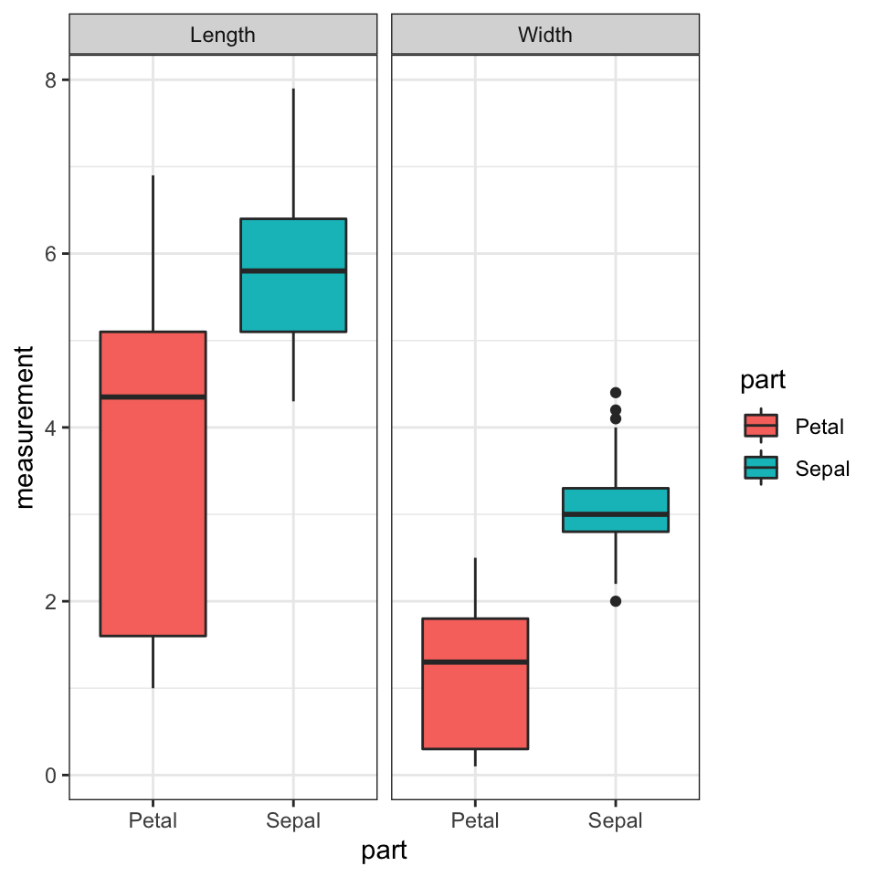
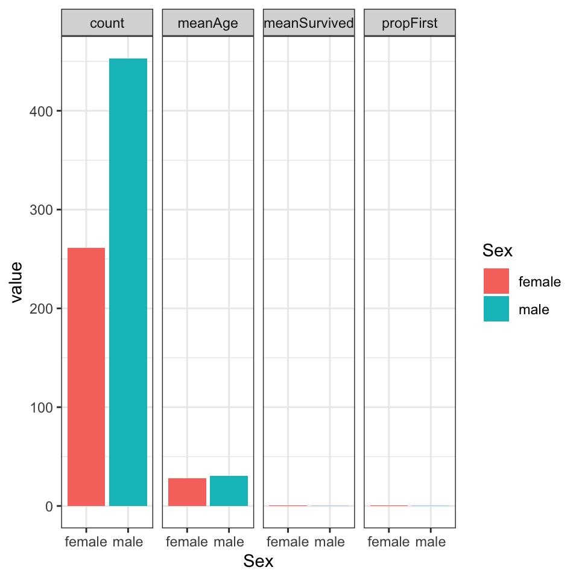
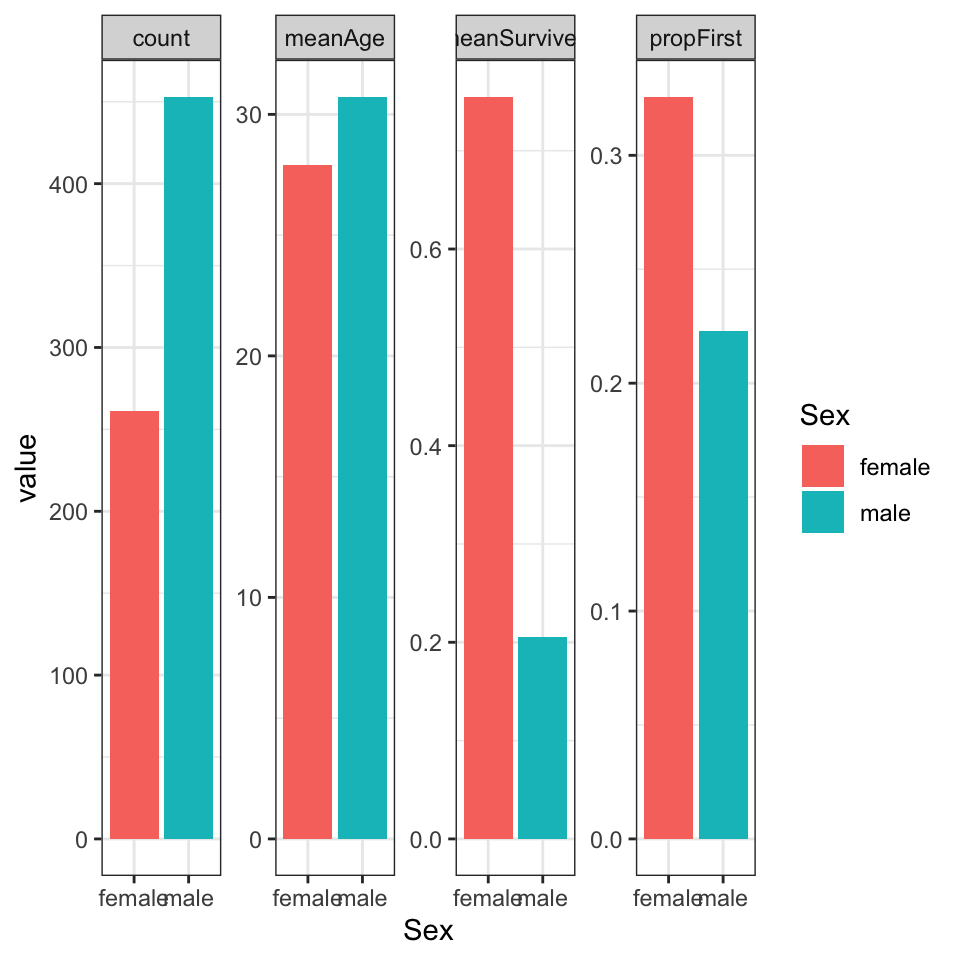

Chapter 6 Bearbejdning dag 2

6.1 Indledning og læringsmålene
I dag arbejder du videre med tidyverse, især på pakken dplyr og tidyr, som kan bruges til at ændre på strukturen af et datasæt, således at det passer til den struktur, som kræves for at blandt andet lave plots med ggplot2.
Det er ofte tilfældet indenfor biologi, at man har sit data i et dataframe og nogle ekstra sample oplysninger i en anden dataframe. Derfor vil vi gerne have en måde, at forbinde de to dataframes i R, som gør, at vi kan inddrage de ekstra oplysninger når vi lave plots af de data.
6.1.1 Læringsmålene
Du skal være i stand til at
- Benytte kombinationen af
group_by()ogsummarise(). - Forstå forskellen mellem
wideoglongdata og brugepivot_longer()til at facilitere plotting - Benytte
left_join()eller øvrige join funktioner til at tilføje sample information til datasættet.
6.1.2 Videoer
- Video 1 - vi skal kig lidt nærmere på
group_by()+summarise()og forbindetidyversekode ogggplot2kode sammen med %>%/+.
Link her hvis det ikke virker nedenunder: https://player.vimeo.com/video/546910681
- Video 2 - wide/long data forms og
pivot_longer()og bruge den i ggplot2
Link her hvis det ikke virker nedenunder: https://player.vimeo.com/video/707081191
- Video 3 - eksempel med titanic summary statistics
Link her hvis det ikke virker nedenunder: https://player.vimeo.com/video/707223997
- Video 4: left_join() of tables with extra sample information and plot
Link her hvis det ikke virker nedenunder: https://player.vimeo.com/video/707082269
6.2 group_by() med summarise() i dplyr-pakken
Med kombination af group_by() med summarise() kan man finde numeriske svar på spørgsmålet: havde mænd eller kvinde en højre sandsynlighed for at overleve tragedien?
Lad os starte med løsningen med tapply til at udregne proportionen af mænd og kvinde der overlevede: følgende kode svarer til, at man opdeler variablen Survived efter den katagoriske variable Sex og tager middelværdien. Det giver dermed proportionen der overlevede efter køn (da Survived er kodet sådan at 1 betyder at man overlevede og 0 betyder at man ikke overlevede).
titanic_clean <- titanic %>%
select(-Cabin) %>%
drop_na()
#tapply løsning
tapply(titanic_clean$Survived,titanic_clean$Sex,mean)## female male
## 0.7547893 0.2052980Lad os skifter over til den tidyverse løsning. Lad os tage udgangspunkt i summarise(): som et eksempel af hvordan man bruger funktionen, vil vi beregner en variable der hedder “medianFare” som er lig med median(fare).
titanic_clean %>%
summarise("medianFare"=median(Fare))## # A tibble: 1 × 1
## medianFare
## <dbl>
## 1 15.7Vi får faktisk en ny dataramme her, med kun variablen som vi lige har specificeret. Vi er interesseret i proportionen, der overlevede, så vi tager middelværdien af variablen Survived. Lad os gøre det med summarise():
titanic_clean %>%
summarise(meanSurvived = mean(Survived))## # A tibble: 1 × 1
## meanSurvived
## <dbl>
## 1 0.406Få at svare på spørgsmålet er vi også nødt til at opdele efter kolonnen Sex. Vi kan bruge den kombinering af group_by() og summarise() - vi opdele efter Sex ved at anvende funktionen group_by() og derefter bruger summarise() til at oprette en kolon der hedder meanSurvived, der viser proportionen der overlevede for female and male.
#tidyverse løsning
titanic_clean %>%
group_by(Sex) %>%
summarise(meanSurvived = mean(Survived))## # A tibble: 2 × 2
## Sex meanSurvived
## <chr> <dbl>
## 1 female 0.755
## 2 male 0.205Lad os tage resultatet fra ovenpå og visualiserer det i et barplot, som i nedenstående:
titanic_clean %>%
group_by(Sex) %>%
summarise(meanSurvived = mean(Survived)) %>%
ggplot(aes(x=Sex,y=meanSurvived,fill=Sex)) +
geom_bar(stat="identity",show.legend = FALSE) + theme_minimal()
6.2.1 Reference af summarise() funktioner
Nogle fuktioner man ofte bruge med summarise() (der er mange andre muligheder).
| fuktion | beskrivelse |
|---|---|
mean() |
to give us the mean value of a variable. |
sd() |
to give us the standard deviation of a variable. |
min() |
giving us the lowest value of a variable. |
max() |
giving us the highest value of a variable. |
n() |
giving us the number of observations in a variable. and many more. |
first() |
first values |
6.2.2 Flere summary statistic på én gang
Vi kan også lave flere summary statistics på én gang. For eksempel, lad os anvende funktionen group_by med Sex igen, men beregner flere forskellige summary statistics:
titanic_clean_summary_by_sex <- titanic_clean %>%
group_by(Sex) %>%
summarise(count = n(), #count
meanSurvived = mean(Survived), #middelværdi survived
meanAge = mean(Age), #middelværdi age
propFirst = sum(Pclass==1)/n()) #proportionen i første klass
titanic_clean_summary_by_sex## # A tibble: 2 × 5
## Sex count meanSurvived meanAge propFirst
## <chr> <int> <dbl> <dbl> <dbl>
## 1 female 261 0.755 27.9 0.326
## 2 male 453 0.205 30.7 0.223Igen kan denne summary table bruges som et datasæt til at lave et plot med ggplot2. Bemærk at her bruger vi stat="identity", fordi vi skal ikke tælle observationerne op, men bare plot præcis de tal som er i datarammen på y-aksen. I nedenstående laver vi barplots for meanAge og propFirst - de er plottet ved at bruge to forskellige ggplot kommandoer og bemærk, at det er plottet ved siden af hinanden med en funktion der hedder grid.arrange() fra R-pakken gridExtra.
plotA <- ggplot(data=titanic_clean_summary_by_sex,aes(x=Sex,y=meanAge,fill=Sex)) +
geom_bar(stat="identity",show.legend = FALSE) +
theme_minimal()
plotB <- ggplot(data=titanic_clean_summary_by_sex,aes(x=Sex,y=propFirst,fill=Sex)) +
geom_bar(stat="identity",show.legend = FALSE) +
theme_minimal()
library(gridExtra)
grid.arrange(plotA,plotB,ncol=2) #plot both together
Vi kan se, at females var i gennemsnit lidt yngere end males, og havde en højere sandsynlighed for at være i første klass. Et interessant spørgsmål er, hvordan man kan lave ovenstående plots uden at bruge to forskellige ggplot kommandoer - altså, en automatiske løsning hvor vi kan plotte flere summary statistiks med kun én ggplot kommando. Vi kommer til at se hvordan man gøre det med at første lave datasættet om til long form.
6.2.3 Mere kompliceret group_by()
Lad os også beregne hvor mange passagerer der var efter både deres klass, og hvor de gik ombord skibet:
titanic_clean %>%
group_by(Embarked, Pclass) %>% # group by multiple variables...
summarise(count = n())## `summarise()` has grouped output by 'Embarked'. You can override using the
## `.groups` argument.## # A tibble: 10 × 3
## # Groups: Embarked [4]
## Embarked Pclass count
## <chr> <int> <int>
## 1 "" 1 2
## 2 "C" 1 74
## 3 "C" 2 15
## 4 "C" 3 41
## 5 "Q" 1 2
## 6 "Q" 2 2
## 7 "Q" 3 24
## 8 "S" 1 108
## 9 "S" 2 156
## 10 "S" 3 290Man kan se at de flest gik om bord i Southampton (S), men der var også forholdsvis mange første klass passagerer der gik om bord i Cherbourg (C). Lad os gå videre med vores Survived eksempel og beregne proportionen der overlevede efter de tre variabler Adult, Sex og Pclass.
titanic_clean_summary_survived <- titanic_clean %>%
mutate(Adult = ifelse(Age>=18,"Adult","Child")) %>%
group_by(Adult,Sex,Pclass) %>%
summarise(meanSurvived = mean(Survived))## `summarise()` has grouped output by 'Adult', 'Sex'. You can override using the
## `.groups` argument.titanic_clean_summary_survived## # A tibble: 12 × 4
## # Groups: Adult, Sex [4]
## Adult Sex Pclass meanSurvived
## <chr> <chr> <int> <dbl>
## 1 Adult female 1 0.974
## 2 Adult female 2 0.903
## 3 Adult female 3 0.418
## 4 Adult male 1 0.371
## 5 Adult male 2 0.0682
## 6 Adult male 3 0.133
## 7 Child female 1 0.875
## 8 Child female 2 1
## 9 Child female 3 0.543
## 10 Child male 1 1
## 11 Child male 2 0.818
## 12 Child male 3 0.233Og så kan vi også bruge resultatet ind i en ggplot, hvor vi kombinerer de tre variabler og adskiller efter Pclass:
ggplot(titanic_clean_summary_survived,aes(x=Sex,y=meanSurvived,fill=Adult)) +
geom_bar(stat="identity",position = "dodge") +
facet_grid(~Pclass) +
ylab("Proportion survived") +
theme_bw()
6.2.4 Funktionen ungroup
Nogle gange når man er færdig med en proces, men gerne vil arbejde videre på et dataframe, er det nyttigt at anvende ungroup() på datasættet igen. Det er meste relevant i længere projektor men som eksempel kig på følgende kode og bemærk at der står “Groups: Adult [2]” på toppen af den nye dataframe med summary statistics:
titanic_clean_summary <- titanic_clean %>%
mutate(Adult = ifelse(Age>=18,"Adult","Child")) %>%
group_by(Adult,Sex) %>%
summarise(meanSurvived = mean(Survived))## `summarise()` has grouped output by 'Adult'. You can override using the
## `.groups` argument.titanic_clean_summary## # A tibble: 4 × 3
## # Groups: Adult [2]
## Adult Sex meanSurvived
## <chr> <chr> <dbl>
## 1 Adult female 0.772
## 2 Adult male 0.177
## 3 Child female 0.691
## 4 Child male 0.397Bemærk at vi først anvendte group_by på både Adult og Sex, men hver gange man lave en beregning bliver én opdeling fjernet - i dette tilfælde opdeler man ikke længere efter Sex men man stadig opdeler efter Adult. Det er ikke et problem hvis vi ikke vil arbejde videre med dataframen. Men forstil at vi gerne vil vide, hvad den maksimum chance for survival er ud fra de fire tal beregnede. Der vi ikke vil adskille efter en kategorisk variabel dropper vi group_by():
titanic_clean_summary %>%
summarise("maxChance" = max(meanSurvived))## # A tibble: 2 × 2
## Adult maxChance
## <chr> <dbl>
## 1 Adult 0.772
## 2 Child 0.691Man kan dog se, at outtputtet er blevet adskilt efter variablen Adult. For at undgå disse bør man første anvende ungroup for at få fjernet effekten af group_by().
titanic_clean_summary %>%
ungroup() %>%
summarise("maxChance" = max(meanSurvived))## # A tibble: 1 × 1
## maxChance
## <dbl>
## 1 0.7726.3 pivot_longer()/pivot_wider() med Tidyr-pakken
Tidy data findes i to former: wide data og long data. Det kan være nyttigt at transformere dataframen fra den ene form til den anden, for fk. at lave et bemstemt plot med ggplot2-pakken. Indenfor pakken tidyr er der funktioner som kan bruges til at lave disse transformeringer.
Inden vi begynde at kigge lidt nærmere på tidyr skal vi beskrive, hvad betyder long data og wide data.

Figure 6.1: source: https://www.garrickadenbuie.com/project/tidyexplain/
Wide data: Her har man en kolon til hver variabel og en række til hver observation. Det gøre de data nem at forstå og denne data type findes ofte indenfor biologi - for eksempel hvis man har forskellige samples (treatments, controls, conditions osv.) som variabler.
Long data: Med long data har man værdier samlet i en enkel kolon og en kolon som en slags nøgle, som fortæller også hvilken variable hver værdi hørte til i den wide format. Datasættet er stadig betragtet som tidy men informationen opbevares på en anden måde. Det er lidt sværer at læse men nemmere at arbejde med når man analyser de data.
Når man transformer data fra wide til long eller omvendt, kaldes det for reshaping.
6.3.1 Tidyr pakke - oversigt
Her er en oversigt over de fire vigtigste funktioner fra R-pakken tidyr. Vi fokuserer mest på pivot funktionerne men det kan være nyttigt at bruge separate og unite en gang i mellem.
tidr funktion |
Beskrivelse |
|---|---|
pivot_longer() |
short til long |
pivot_wider() |
long til short |
separate() |
opdele strings fra en kolon til to |
unite() |
tilføje strings sammen ind fra to til én kolon |
6.3.2 Wide -> Long med pivot_longer()
Lad os arbejde med datasættet Iris. Man få Iris i long form med følgende kommando. Her vil man gerne tage alle numeriske kolonner og placerer deres værdier i en enkel kolon value (med en nøgle kolon name til at skelne imellem de forskellige variabler).
iris %>% pivot_longer(cols = where(is.numeric))## # A tibble: 600 × 3
## Species name value
## <fct> <chr> <dbl>
## 1 setosa Sepal.Length 5.1
## 2 setosa Sepal.Width 3.5
## 3 setosa Petal.Length 1.4
## 4 setosa Petal.Width 0.2
## 5 setosa Sepal.Length 4.9
## 6 setosa Sepal.Width 3
## 7 setosa Petal.Length 1.4
## 8 setosa Petal.Width 0.2
## 9 setosa Sepal.Length 4.7
## 10 setosa Sepal.Width 3.2
## # … with 590 more rowsAt beholde numeriske kolonner svarer i dette tilfælde til at man ikke vil have variablen Species med i den enkel kolon:
iris %>%
pivot_longer(cols = -Species)## # A tibble: 600 × 3
## Species name value
## <fct> <chr> <dbl>
## 1 setosa Sepal.Length 5.1
## 2 setosa Sepal.Width 3.5
## 3 setosa Petal.Length 1.4
## 4 setosa Petal.Width 0.2
## 5 setosa Sepal.Length 4.9
## 6 setosa Sepal.Width 3
## 7 setosa Petal.Length 1.4
## 8 setosa Petal.Width 0.2
## 9 setosa Sepal.Length 4.7
## 10 setosa Sepal.Width 3.2
## # … with 590 more rowsHer er et billede der illustrerer wide og long form med datasættet iris:

Figure 6.2: wide til long med Iris
Til venstre har vi målingerne i datasættet over fire forskellige kolonner som hedder Sepal.Length, Sepal.Width, Petal.Length og Petal.Width, og en ekstra kolon der skelne imellem de tre Species. Til højre har vi fået alle målingerne ind i en enkel kolon der hedder values, og så bruger man en anden ‘nøgle’ kolon der hedder name til at fortælle os om det er en måling for Sepal.Length eller Sepal.Width osv.
Jeg kan kalde de kolonner navne for målingerne og nøglen til nogle andre en default: for eksempel i nedenstående skal målingerne hedde measurements og nøglen hedde trait.
iris.long <- iris %>% pivot_longer(cols = -Species,
names_to = "trait",
values_to = "measurement")
Man kan for eksempel bruge den long form den til at visualisere samtlige mulige boxplots opdelt efter Species og trait på samme plot:
ggplot(iris.long,aes(y=measurement,x=Species,fill=Species)) +
geom_boxplot() +
facet_grid(~trait) +
theme_bw()
6.3.3 separate()
Funktionen separate() fra pakken tidyr kan bruges til at opdele to forskellige dele som eksisterer i samme kolon. For eksempel, i iris har vi variabler med navne Sepal.Width, Sepal.Length osv. - man kan forestille sig, at opdele disse navne over to kolonner i stedet for en - fk. “Sepal” og “Width” i tilfældet af Sepal.Width. I nedenstående kan man se, hvordan man anvende separate().
iris %>%
pivot_longer(cols = -Species, names_to = "trait", values_to = "measurement") %>%
separate(col = trait, into = c("part", "measure"),sep = "\\.") %>%
head()## # A tibble: 6 × 4
## Species part measure measurement
## <fct> <chr> <chr> <dbl>
## 1 setosa Sepal Length 5.1
## 2 setosa Sepal Width 3.5
## 3 setosa Petal Length 1.4
## 4 setosa Petal Width 0.2
## 5 setosa Sepal Length 4.9
## 6 setosa Sepal Width 3Man specificerer variablen trait, og at det skal opdeles til to variabler part og measure. Vi angiver sep = "\\." som betyder, at vi gerne vil have part som delen af trait foran ‘.’ og measure som delen af trait efter .. Vi bruger “\.” til at fortælle, at vi er interesseret i punktum og ikke en “anonym character,” som punktum plejer at betyde i “string”-sprog. Man behøver faktisk ikke at specifice sep = "\\." i dette tilfælde - som standard kigger funktionen efter ‘non-character’ tegne og bruger dem til at lave opdelingen.
Samme resultat:
iris %>%
pivot_longer(cols = -Species, names_to = "trait", values_to = "measurement") %>%
separate(col = trait, into = c("part", "measure")) %>%
head()## # A tibble: 6 × 4
## Species part measure measurement
## <fct> <chr> <chr> <dbl>
## 1 setosa Sepal Length 5.1
## 2 setosa Sepal Width 3.5
## 3 setosa Petal Length 1.4
## 4 setosa Petal Width 0.2
## 5 setosa Sepal Length 4.9
## 6 setosa Sepal Width 3Bruger resultatet i et plot:
iris %>%
pivot_longer(cols = -Species, names_to = "trait", values_to = "measurement") %>%
separate(col = trait, into = c("part", "measure")) %>%
ggplot(aes(y=measurement,x=part,fill=part)) +
geom_boxplot() +
facet_grid(~measure) +
theme_bw()
Se også unite() som gøre det modsatte til separate().
6.4 Eksempel: Titanic summary statistics
Her er et eksempel med datasættet titanic der inddrager mange af de tidyverse koncepter vi har lært indtil videre.
group_by()ogsummarise()
Vi laver vores summary statistics som i ovenstående.
titanic_clean_summary_by_sex <- titanic_clean %>%
group_by(Sex) %>%
summarise(count = n(),
meanSurvived = mean(Survived),
meanAge = mean(Age),
propFirst = sum(Pclass==1)/n())
titanic_clean_summary_by_sex## # A tibble: 2 × 5
## Sex count meanSurvived meanAge propFirst
## <chr> <int> <dbl> <dbl> <dbl>
## 1 female 261 0.755 27.9 0.326
## 2 male 453 0.205 30.7 0.223pivot_longer()
Vi transformerer eller reshape datarammen fra wide data til long data. Vi vil få kun de numeriske summary statistics samlede i en enkel kolonne, så variablen Sex skal indgå i den enkel kolonne.
titanic_clean_summary_by_sex %>% pivot_longer(cols=-Sex)## # A tibble: 8 × 3
## Sex name value
## <chr> <chr> <dbl>
## 1 female count 261
## 2 female meanSurvived 0.755
## 3 female meanAge 27.9
## 4 female propFirst 0.326
## 5 male count 453
## 6 male meanSurvived 0.205
## 7 male meanAge 30.7
## 8 male propFirst 0.223ggplot()medfacet_grid()
Vi kombinerer pivot_longer() med et plot af vores summary statistics og benytte facet_grid() til at separere ved de forskellige statistiker.
titanic_clean_summary_by_sex %>%
pivot_longer(cols=-Sex) %>%
ggplot(aes(x=Sex,y=value,fill=Sex)) +
geom_bar(stat="identity") +
facet_grid(~name) +
theme_bw()
facet_wrap()
Vi laver den sammen som ovenstående men specificerer facet_wrap() i stedet for facet_grid() - indenfor facet_wrap() kan man bruge indstillingen scales="free" som gøre, at de fire plots få hver deres egne akse limits.
titanic_clean_summary_by_sex %>%
pivot_longer(cols=-Sex) %>%
ggplot(aes(x=Sex,y=value,fill=Sex)) +
geom_bar(stat="identity") +
facet_wrap(~name,scales="free",ncol=4) +
theme_bw()
6.4.1 Demonstration af pivot_wider()
Det er også brugbart at kende måden at man skifter fra long form til wide form.
- Wide -> Long
titanic_summary_long <- titanic_clean_summary_by_sex %>%
pivot_longer(cols=-Sex)- Long -> Wide
titanic_summary_long %>%
pivot_wider(names_from = "name",values_from = "value")## # A tibble: 2 × 5
## Sex count meanSurvived meanAge propFirst
## <chr> <dbl> <dbl> <dbl> <dbl>
## 1 female 261 0.755 27.9 0.326
## 2 male 453 0.205 30.7 0.223Parametre er:
names_from- nøglekolon som skal udgør flere kolonner i den nye dataframevalues_from- selve værdier, som skal være i de nye kolonner i den wide form
6.5 left_join(): forbinde dataframes
Vi tager udgangspunkt i følgende to dataframes:
gene_table <- as_tibble(read.table("https://www.dropbox.com/s/6ll8ezrskly8joi/mouse_2gene_expr.txt?dl=1",header=T))
coldata <- as_tibble(read.table("https://www.dropbox.com/s/jlrszakmqlnmu2m/bottomly_phenodata.txt?dl=1"))Lad os kigge først på datasættet gene_table, som viser genekspression målinger over forskellige samples i mus.
gene_table## # A tibble: 3 × 22
## gene SRX033480 SRX033488 SRX033481 SRX033489 SRX033482 SRX033490 SRX033483
## <chr> <dbl> <dbl> <dbl> <dbl> <dbl> <dbl> <dbl>
## 1 ENSMUSG… 158. 182. 119. 155. 167. 164. 180.
## 2 ENSMUSG… 143. 118. 91.6 106. 157. 95.1 131.
## 3 ENSMUSG… 132. 117. 100. 116. 88.1 125. 124.
## # … with 14 more variables: SRX033476 <dbl>, SRX033478 <dbl>, SRX033479 <dbl>,
## # SRX033472 <dbl>, SRX033473 <dbl>, SRX033474 <dbl>, SRX033475 <dbl>,
## # SRX033491 <dbl>, SRX033484 <dbl>, SRX033492 <dbl>, SRX033485 <dbl>,
## # SRX033493 <dbl>, SRX033486 <dbl>, SRX033494 <dbl>Man kan se, at der er 22 kolonner i datasættet - én der refererer til et gen navn og 21 der er forskellige samples fra eksperimentet. Men det ikke er klart, hvad den enkel sample egentlig er. Lad os derfor kigge på de sample oplysninger, som kan være nyttige at inddrage i vores analyse/plotter for at undersøge eventualle batch effekter osv.
coldata## # A tibble: 21 × 5
## sample num.tech.reps strain batch lane.number
## <chr> <int> <chr> <int> <int>
## 1 SRX033480 1 C57BL.6J 6 1
## 2 SRX033488 1 C57BL.6J 7 1
## 3 SRX033481 1 C57BL.6J 6 2
## 4 SRX033489 1 C57BL.6J 7 2
## 5 SRX033482 1 C57BL.6J 6 3
## 6 SRX033490 1 C57BL.6J 7 3
## 7 SRX033483 1 C57BL.6J 6 5
## 8 SRX033476 1 C57BL.6J 4 6
## 9 SRX033478 1 C57BL.6J 4 7
## 10 SRX033479 1 C57BL.6J 4 8
## # … with 11 more rowsMan kan se forskellige oplysninger om de 21 samples, blandt andet den strain af mus hver sample stammer fra og den batch. Her refererer batch på de forskellige omstændigheder eller tidspunkter de samples var blevet samlet. Hvis man er interesset i om der er en forskel i ekspressionsniveau mellem de to strains, kan det være, at man er nødt til at kontrolle efter batch for at sikre at forskellen skyldes strain og ikke tekniske effekter pga. batch.
6.5.1 Funktionen left_join() fra dplyr-pakken
Funktionen left_join() er en del af pakken dplyr som vi har arbejdet meget med indtil videre i kurset.
| funktion | Beskrivelse (kopiret |
|---|---|
left_join() |
Join matching rows from second table to the first |
right_join() |
Join matching rows from the first table to the second |
inner_join() |
Join two tables, returning all rows present in both |
full_join() |
Join data with all possible rows present |
Vi fokuserer her på funktionen left_join() fordi den er den meste brugbart i biologiske data analyser, men vi kigger også på de øvrige funktioner gennem problemstillingerne nedenunder. Her er en grafiske demonstration af left_join():

Figure 6.3: left_join graphical demonstration (source https://mgimond.github.io/ES218/Week03c.html)
Det særligt med left_join i forhold til de andre funktioner, er at left_join bevarer samtlige data i dataframen man tager udgangspunkt i - det vil sige df i ovenstående billede, selvom d matchet ikke med en frugt i dj. I ovenstående genekspression eksempel betyder det, at man bevarer alle målinger i gene_table, uanset om der er oplysninger om deres pågældende samples.
6.5.2 Anvende left_join() for vores dataset.
Ligesom man matcher kolonnen y i df og dj i ovenstående eksempel, skal vi også have en kolon vi kan matcher. Vi vil gerne bruge kolonnen sample fra sample_info til at sammenligne med de forskellige sample navne i gene_table, men første er vi nødt til at lave gene_table om til long-form, således at sample navne fremgår i en enkel kolon, sample (der kan bruges i left_join).
gene_table_long <- gene_table %>%
pivot_longer(cols = -gene,
names_to = "sample",
values_to = "expression")
gene_table_long## # A tibble: 63 × 3
## gene sample expression
## <chr> <chr> <dbl>
## 1 ENSMUSG00000006517 SRX033480 158.
## 2 ENSMUSG00000006517 SRX033488 182.
## 3 ENSMUSG00000006517 SRX033481 119.
## 4 ENSMUSG00000006517 SRX033489 155.
## 5 ENSMUSG00000006517 SRX033482 167.
## 6 ENSMUSG00000006517 SRX033490 164.
## 7 ENSMUSG00000006517 SRX033483 180.
## 8 ENSMUSG00000006517 SRX033476 263.
## 9 ENSMUSG00000006517 SRX033478 276.
## 10 ENSMUSG00000006517 SRX033479 328.
## # … with 53 more rowsDernæst kan vi tilføje oplysninger data fra sample_info. Her angiver vi by = "sample" fordi det er navnet til kolonnen som vi geerne vil bruge til at forbinde de to datarammer - altså, det er med i begge to datarammer, så left_join() kan bruge den som en slags nøgle til at vide, hvor alle de forskellige oplysninger skal tilføjes.
data_join <- gene_table_long %>% left_join(coldata,by="sample")Nu at vi har fået forbundet de to datarammer, kan man inddrage de ekstra oplysninger vi har fået i et plot. Her laver vi et plot med en farve til hver strain og et plot med en farve til hver batch.
gg2 <- data_join %>%
ggplot(aes(y=expression,x=as.factor(strain),fill=gene)) +
geom_boxplot() +
facet_wrap(~gene,scales="free") +
theme_minimal() +
theme(legend.position = "none") +
ggtitle("Expression split according to strain")
gg2gg1 <- data_join %>%
ggplot(aes(y=expression,x=as.factor(batch),fill=gene)) +
geom_boxplot() +
facet_wrap(~gene,scales="free") +
theme_minimal() +
theme(legend.position = "none") +
ggtitle("Expression split according to batch")
gg1
6.6 Problemstillinger
Problem 1) Lav quizzen - “Quiz - tidyverse - part 2.”
Vi øver os med titanic. Inlæs de data og lave oprydningen med følgende kode:
library(tidyverse)
library(titanic)
titanic <- as_tibble(titanic_train)
titanic_clean <- titanic %>%
select(-Cabin) %>%
drop_na()Problem 2) Fra titanic_clean beregn den gennemsnitlige alder af alle passagerer ombord skibet.
titanic_clean %>%
summarise(....) #rediger her- I samme kommando beregne også den maksimum alder og minimum alder, samt proportionen af passagerer, der er under 18 (for den sidste se mit eksempel med
Pclassoven på). Dataframen skal ser sådan ud:
## # A tibble: 1 × 4
## mean_alder max_alder min_alder under_18p
## <dbl> <dbl> <dbl> <dbl>
## 1 29.7 80 0.42 0.158Problem 3)
a) Beregne samme summary statistics som i sidste problem men anvende group_by() til at først opdeler efter variablen Pclass.
b) Brug din nye summary statistikker dataframe til at lave et barplot med stat="identity" som viser den gennemsnitlige alder på y-aksen opdelt efter Pclass på x-aksen (tænke lidt over data typen på Pclass)
c) Anvend pivot_longer() på din summary statistikker dataframe (brug indstilling cols = -Pclass)
d) Brug din long-form dataframe af summary statistikker til at lave plots af samtlige summary statistikker med én ggplot kommando (adskil dem ved at benytte facet og opdele efter Pclass indenfor hvert plot, ligesom i følgende).

Problem 4)
a) Beregne samme summary statistics som i 2) men anvende group_by() til at først opdele efter både variablerne Pclass og Sex.
- OBS: Man får en advarsel “
summarise()has grouped output by ‘Pclass’ …” fordi din dataframe er stadig betragtet som opdelte efterPclass, som du skal tage i betragtning hvis du laver flere beregninger på den. - Brug til sidste
ungroup()på din nye dataframe for at være sikker på, at den ikke længere er opdelt efter en variabel.
b) Brug pivot_longer til at få datasættet i long form (tænk over hvilke variabler skal være i indstillingen cols - det kan hjælp at skrive dem i en vector med notationen c()). Nøglekolonnen skal hed stat og kolonnen med værdierne skal hed values.
## `summarise()` has grouped output by 'Pclass'. You can override using the
## `.groups` argument.c) Lav et plot af samtlige summary statistikker, som er i long form og ser ud som følgende plot.
Problem 5) group_by() med tre variabler og summarise(). Afprøv en kombination med tre forskellige variabler (vælg selv) indenfor group_by() og bruge summarise() til at beregne middelværdien for Fare.
- Anvend
ungroup()når du er færdig med summarise - Lave et plot for at visualisere
meanFare. Idé: som mulighed kan man tilføje variabler tilfacet_grid()- for eksempelfacet_grid(~Var1 + Var2).
Problem 6) pivot_longer() Lav følgende plot
- Først lave to nye variabler fra
SibSpogParch, hvor der står “yes” hvis værdien er større end 0 selectnødvendige variabler- Lave om til long form (tænk over hvilke variabler skal være i en enkel kolon)
- Brug din long form dataframe til at lave plottet
Problem 7) Pivot_wider() Vi har en tribble som jeg har kopiret fra https://r4ds.had.co.nz/index.html.
people <- tribble(
~name, ~names, ~values,
#-----------------|--------|------
"Phillip Woods", "age", 45,
"Phillip Woods", "height", 186,
"Jessica Cordero", "age", 37,
"Jessica Cordero", "height", 156,
"Brady Smith", "age", 23,
"Brady Smith", "height", 177
)Brug pivot_wider() på people. Vi er nødt til at specificer som minimum names_from og values_from indenfor pivot_wider() - prøv at angiv de relevante variabler
Problem 8) left_join() øvelse. Kør følgende kode med to tribbles:
superheroes <- tribble(
~name, ~alignment, ~gender, ~publisher,
"Magneto", "bad", "male", "Marvel",
"Storm", "good", "female", "Marvel",
"Mystique", "bad", "female", "Marvel",
"Batman", "good", "male", "DC",
"Joker", "bad", "male", "DC",
"Catwoman", "bad", "female", "DC",
"Hellboy", "good", "male", "Dark Horse Comics"
)
publishers <- tribble(
~publisher, ~yr_founded,
"DC", 1934L,
"Marvel", 1939L,
"Image", 1992L
)Vi har to dataframes - superheroes og publishers. Hvilken kolon kan man bruge til at forbinde de to dataframes? Brug left_join() til at tilføje oplysninger fra publishers til datarammen superheroes.
- Få man alle observationerne fra dataframen
superheroesmed i din nye dataframe? - Benyt
inner_join()til at forbindepublisherstilsuperheroes- få man så nu alle observationer med denne gang? - Benyt
full_join()til at forbindepublisherstilsuperheroes- hvor mange observationer få man med nu? Hvorfor?
Problem 9) left_join() øvelse.
Køre nedenstående kode, hvor der er to dataframes - iris2 og sample_table. Dataframen iris2 er ikke særlig informativ med hensyn til hvad de forskellige samples egentlige er, men oplysningerne om dem står i sample_table. Brug left_join() til at tilføje sample_table til iris2 for at få en dataramme som indeholder både de data og de samples oplysninger.
data(iris)
iris2 <- as_tibble(iris)
names(iris2) <- c("sample1","sample2","sample3","sample4","Species")
samp_table <- tribble(
~sample, ~part, ~measure,
#------|-------|--------#
"sample1", "Sepal", "Length",
"sample2", "Sepal", "Width",
"sample3", "Petal", "Length",
"sample4", "Sepal", "Width"
)
iris2 %>% glimpse()## Rows: 150
## Columns: 5
## $ sample1 <dbl> 5.1, 4.9, 4.7, 4.6, 5.0, 5.4, 4.6, 5.0, 4.4, 4.9, 5.4, 4.8, 4.…
## $ sample2 <dbl> 3.5, 3.0, 3.2, 3.1, 3.6, 3.9, 3.4, 3.4, 2.9, 3.1, 3.7, 3.4, 3.…
## $ sample3 <dbl> 1.4, 1.4, 1.3, 1.5, 1.4, 1.7, 1.4, 1.5, 1.4, 1.5, 1.5, 1.6, 1.…
## $ sample4 <dbl> 0.2, 0.2, 0.2, 0.2, 0.2, 0.4, 0.3, 0.2, 0.2, 0.1, 0.2, 0.2, 0.…
## $ Species <fct> setosa, setosa, setosa, setosa, setosa, setosa, setosa, setosa…samp_table %>% glimpse()## Rows: 4
## Columns: 3
## $ sample <chr> "sample1", "sample2", "sample3", "sample4"
## $ part <chr> "Sepal", "Sepal", "Petal", "Sepal"
## $ measure <chr> "Length", "Width", "Length", "Width"Problem 10) Separate() øvelse
- Tag udgangspunkt i datasættet
titanic_cleanog benyt funktionenSeparate()til at opdele variablenNameind til to variabler, “Surname” og “Rest” (Godt råd: brugsep=", "for at undgå, at man få en unødvendig mellemrum lige før “Rest”). - Anvend
Separate()en gang til, men for at opdele variablenRestinto to variabler, “Title” og “Names.” Hvad bruger man somsep? (Hint: brug “\\” foran en punktum). - Beregn summary statistikker for hver “Title” - mange passagerer, gennemsnits alder, proportionen der overlevede, og proportionen der rejste i første klass.
- Arrange din ny dataframe efter hvor mange personer der er for hver “Title” - mest på toppen og mindst på bunden.
Problem 11) Valgfri ekstra: lav en ny dataramme med alle passagerer, der hedder “Alice” eller “Elizabeth” (brug Google her).
Problem 12) Analyse og visualisering af biologiske datasæt konkurrence!
- Når du færdig med ovenstående husk at få lavet dit plot til konkurrencen!!
- Se siden på Absalon for yderligere detaljer
6.7 Ekstra links
Cheatsheet: https://github.com/rstudio/cheatsheets/blob/master/data-import.pdf